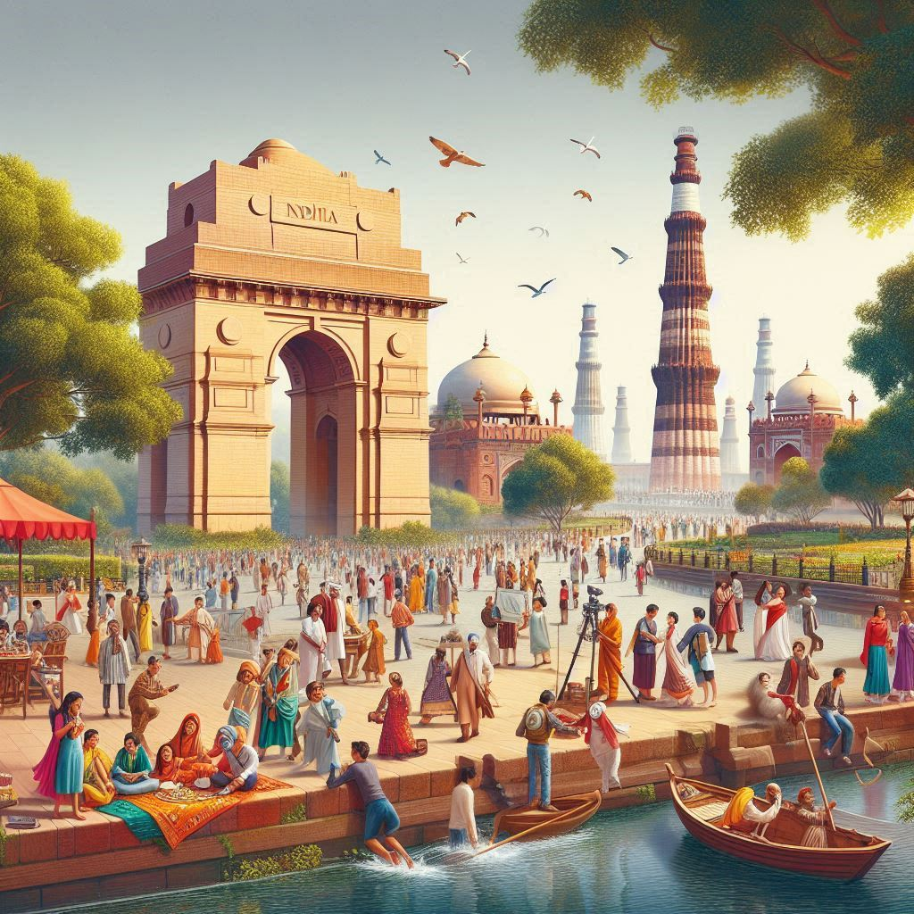
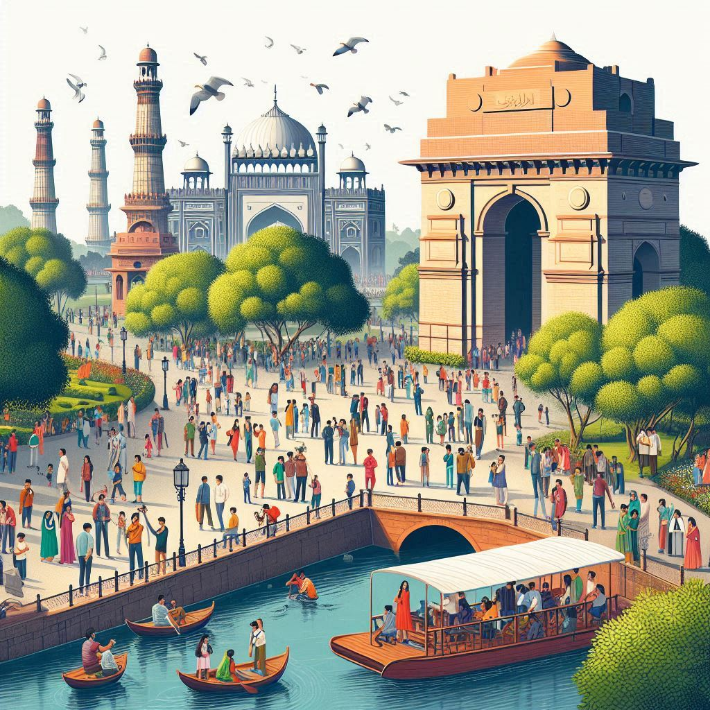

Delhi, as the capital of India, is a vibrant city that attracts millions of tourists each year. Its rich history, diverse culture, and modern attractions make it a fascinating destination. Here’s an overview of key aspects of tourism in Delhi:
1. Historical Sites
- Red Fort: A UNESCO World Heritage Site, this iconic fort was the main residence of Mughal emperors.
- Qutub Minar: This towering minaret is a masterpiece of Indo-Islamic architecture.
- Humayun's Tomb: The first Mughal garden tomb, noted for its stunning Persian-style architecture.
- India Gate: A war memorial dedicated to Indian soldiers who died in World War I.
2. Cultural Attractions
- Jama Masjid: Showcasing exquisite Mughal architecture.
- Lotus Temple: A Bahá'í House of Worship known for its flower-like shape.
- Akshardham Temple: A temple complex with intricate carvings and exhibitions.
3. Museums and Galleries
- National Museum: Houses a vast collection of artifacts.
- National Gallery of Modern Art: Features a rich collection of Indian art.
- Indira Gandhi Memorial Museum: Offers insights into Indian politics and history.
4. Shopping and Markets
- Chandni Chowk: A bustling market known for its textiles, jewelry, and street food.
- Connaught Place: A shopping hub with colonial architecture.
- Dilli Haat: An open-air market showcasing handicrafts and cuisines.
5. Cuisine
- Street Food Tours: Famous for diverse chaats, parathas, kebabs, and sweets.
- Fine Dining: Features a mix of Indian and international cuisine.
6. Religious and Spiritual Sites
- Gurudwara Bangla Sahib: Known for its serene atmosphere and free community meals.
- ISKCON Temple: A vibrant temple dedicated to Lord Krishna.


7. Parks and Gardens
- Lodi Gardens: A park featuring historical tombs and lush greenery.
- Garden of Five Senses: A creatively landscaped garden with themed areas.
8. Events and Festivals
- Cultural Festivals: Vibrant displays during Dussehra, Diwali, and Holi.
- International Trade Fairs: Exhibitions showcasing textiles, technology, and more.
9. Transportation
- Metro System: An efficient way to navigate the city.
- Rickshaws and Cabs: Widely available for convenient transport.
10. Accommodations
- Diverse Options: From luxury hotels to budget hostels in areas like Connaught Place and Aerocity.
Conclusion
Delhi’s rich historical heritage, vibrant culture, and diverse amenities make it an essential stop for anyone exploring India. Whether interested in history, art, food, or spirituality, the city has something for everyone.